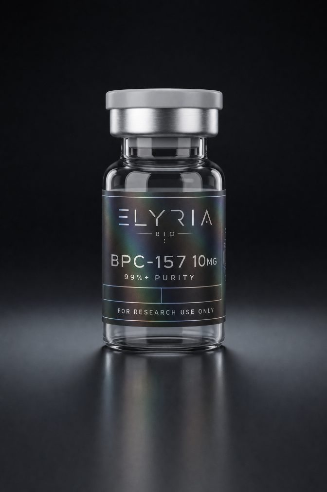
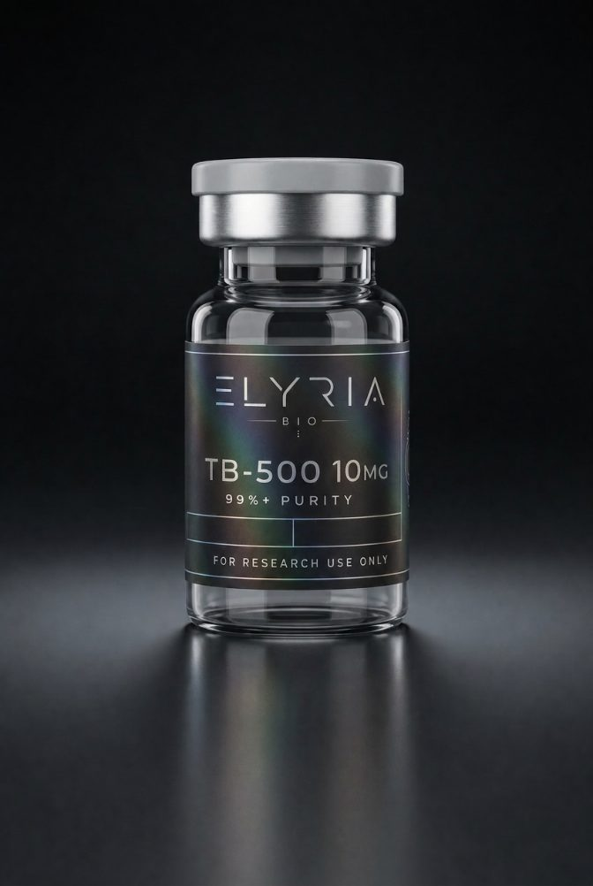
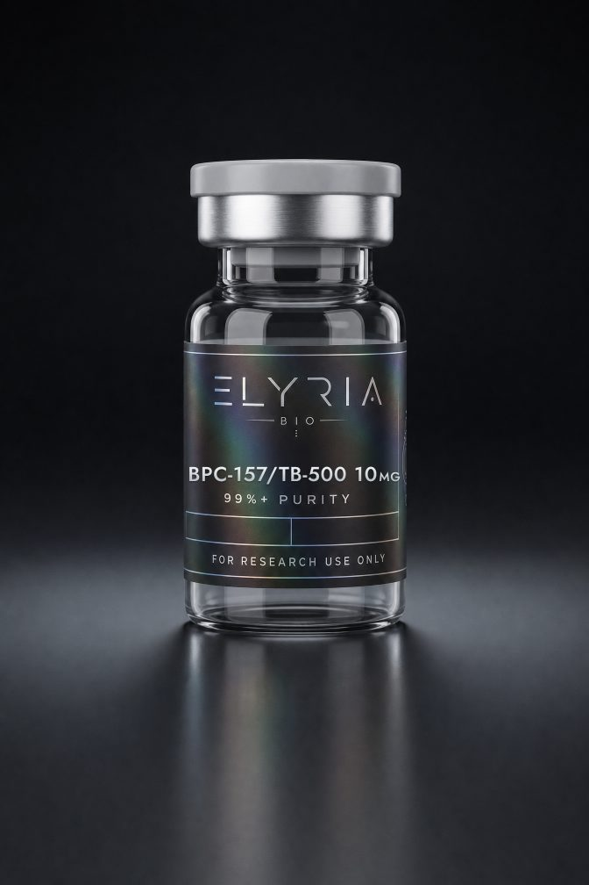
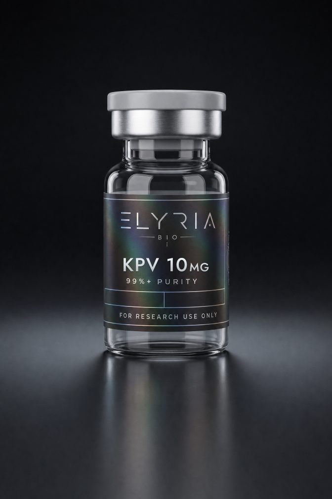
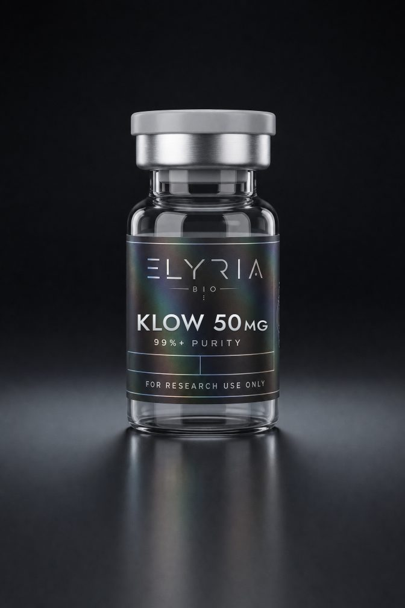

BPC-157
BPC-157 is a synthetic pentadecapeptide based on a partial sequence identified in human gastric juice. Supplied as a lyophilized acetate salt for in-vitro laboratory research — characterized to 99.4% by reversed-phase HPLC, identity confirmed by mass spectrometry, and shipped with a third-party certificate of analysis in every box.
Volume pricing applies automatically in your cart — 3-pack $99.99, 5-pack $149.99, 10-pack $274.99.
BPC-157 (Body Protection Compound-157) is a synthetic pentadecapeptide — a chain of 15 amino acids, sequence GEPPPGKPADDAGLV — based on a partial sequence identified in human gastric juice. Elyria Bio supplies it as a lyophilized 10 mg reference material for in-vitro laboratory research only.
Molecular formula C62H98N16O22 · molecular weight ≈ 1419.53 g/mol · CAS 137525-51-0. Every lot is held to a ≥99% HPLC purity floor and ships with a third-party certificate of analysis.
Overview
As a characterized reference material, BPC-157 is used to standardize in-vitro assays in cell-migration and angiogenesis research. In published laboratory work the peptide has been examined for its interactions with growth-factor and nitric-oxide signaling pathways in connective-tissue and endothelial cell models — descriptors that reference documented pre-clinical and in-vitro context only.
Elyria Bio supplies BPC-157 as a lyophilized acetate salt, characterized by reversed-phase HPLC to 99.4% purity and confirmed by ESI mass spectrometry against its theoretical mass. Every lot ships with a third-party certificate of analysis documenting purity, identity, and endotoxin load (< 0.5 EU/mg), and is fully traceable to its matching COA. Pair it with TB-500 or explore the co-lyophilized BPC-157 / TB-500 blend and the four-peptide KLOW blend for combined-mechanism repair research. Browse the full repair peptide collection for related reference standards.
Documented in-vitro applications
BPC-157 is offered strictly as a laboratory reference material. The following describe documented in-vitro research contexts and make no therapeutic claim.
- Connective-tissue and tendon-derived cell migration assays
- Angiogenesis and endothelial tube-formation models
- Growth-factor (VEGF/EGF) and nitric-oxide pathway signaling studies
- Reference standard for comparative peptide-stability and identity work
- Method development and validation for RP-HPLC and LC-MS peptide assays
Specifications
Representative release specification. Each shipped lot is documented on its own signed third-party certificate of analysis.
Reconstitution reference
Lab-prep math for BPC-157. Enter the diluent volume and the amount you plan to aliquot; the tool returns concentration and draw volume on a U-100 (100 unit / mL) graduated syringe. For in-vitro preparation reference only.
Result
Reconstituting 10 mg with the volume above
U-100 syringe: 100 units = 1 mL. Values are calculated references for laboratory reconstitution and do not constitute dosing guidance. Research Use Only.
Certificate of analysis
Every shipped vial resolves to a signed third-party COA. Preview the representative certificate for the current lot, download it as a PDF, or verify any printed lot number in batch lookup.
Certificate of Analysis
Lot LMB-26B-157Documentation you can verify
The COA is produced by an independent United States laboratory — not in-house — and reports RP-HPLC purity and mass-spec identity for this material's specific lot. The printed lot code on your vial resolves to this exact document and its assay date.
Storage & handling
Lyophilized BPC-157 is stable long-term when kept cold and dry. Handle under standard laboratory aseptic technique.
Sealed and desiccated, protected from light. Stable approximately 1–2 years from the assay date printed on the COA.
After reconstitution with bacteriostatic water, refrigerate and use within the stability window appropriate for your study. Avoid repeated freeze-thaw cycles.
Divide into single-use aliquots before freezing to preserve integrity and minimize handling of the stock solution.
Reconstitute with sterile or bacteriostatic water for multi-draw laboratory preparations. Reconstitution volumes and concentrations are determined by the researcher for the assay at hand; Elyria Bio does not provide dosing guidance, as all materials are supplied for in-vitro research use only.
Shipping & guarantees
Handled like the reference materials they are — documented, protected, and dispatched fast within the United States.
Free shipping over $150
Flat $12 U.S. shipping, free over $150 — free express shipping over $250. Every order is fully tracked end to end.
U.S. domestic onlyCold-chain option
Temperature-controlled gel-pack shipping keeps lyophilized material stable in transit. Selectable at checkout.
Stability preserved48-hour dispatch
Orders ship within 48 hours in protective, tamper-evident packaging with the COA enclosed.
Fast fulfillmentDiscreet packaging
Plain, unbranded outer packaging with no product descriptors visible on the exterior.
Private by defaultShipment protection
Lost, damaged, or stolen packages are reshipped at no cost. Damage claims require photo evidence.
One-time replacement30-day returns
Unopened, unreconstituted vials are eligible for return within 30 days. Reconstituted product is not eligible.
Free return by mailDocumentation & traceability
Certificate of analysis
Signed by an independent US laboratory, reporting RP-HPLC purity and mass-spec identity for this material's lot.
Lot-traceable provenance
Each vial's printed lot number resolves to its matching certificate of analysis and full lot history.
Frequently asked questions
What is BPC-157?
BPC-157 (Body Protection Compound-157) is a synthetic pentadecapeptide — a chain of 15 amino acids, sequence GEPPPGKPADDAGLV — based on a partial sequence identified in human gastric juice. Elyria Bio supplies it strictly as a lyophilized in-vitro laboratory reference material for qualified research professionals.
What is BPC-157 used for in research?
In laboratory settings BPC-157 is used as a reference standard in cell-migration, angiogenesis, and endothelial tube-formation assays and in comparative peptide-stability studies. It is not a drug, supplement, or food and is not for human or veterinary use.
How pure is Elyria Bio's BPC-157?
Every lot is held to a ≥99% reversed-phase HPLC purity floor before release; the current lot is characterized at 99.4%. Molecular identity is confirmed by ESI mass spectrometry against the expected mass, and endotoxin is reported below 0.5 EU/mg.
Does BPC-157 ship with a certificate of analysis?
Yes. Each lot ships with a signed third-party certificate of analysis produced by an independent United States laboratory, reporting HPLC purity and mass-spec identity. Every vial's printed lot number resolves to its own COA and assay date, which you can confirm through batch lookup.
How should BPC-157 be stored?
Store the lyophilized powder sealed and desiccated at −20°C, protected from light, where it is stable for 1–2 years. Once reconstituted with bacteriostatic water, refrigerate at 2–8°C and use within the stability window appropriate for the study; avoid repeated freeze-thaw cycles.
Is there bulk pricing for BPC-157?
Yes. Multi-vial volume pricing applies automatically in the cart: 3 or more vials receive 8% off and 5 or more vials receive 15% off. Orders over $150 ship free within the United States, with free express shipping over $250.
Is BPC-157 legal to buy?
In the United States BPC-157 is legal to purchase as a laboratory research material for in-vitro use. It is not approved by the FDA as a medication and is sold for research use only — not for human or veterinary use. By purchasing you confirm you are a qualified researcher acquiring it for legitimate laboratory research.
Related materials




Explore Elyria Bio
Reference materials, documentation, and collections related to BPC-157.
Documentation & help
Certificates of analysis Batch lookup Storage & handling How we verify Contact & lab accountsBPC-157 is supplied as an in-vitro laboratory research material for qualified professionals. It is not a drug, supplement, or food, is not for human or veterinary use, and has not been evaluated by the FDA. Descriptors reference documented in-vitro and pre-clinical research context only and make no therapeutic claim. By purchasing, you represent that you are a qualified researcher acquiring this material for legitimate laboratory research.